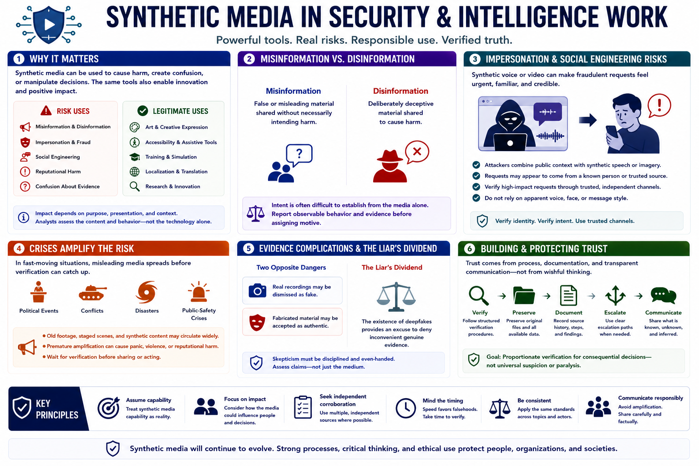

Why Synthetic Media Matters
Connecting to LMS... Progress: in progress

Narration
Synthetic media affects security and intelligence work because it can support misinformation, disinformation, impersonation, fraud, social engineering, reputational harm, and confusion about evidence. The same generation tools also support legitimate art, accessibility, training, and localization.
Misinformation is false or misleading material shared without necessarily intending harm. Disinformation is deliberately deceptive. Intent is often difficult to establish from the media alone, so analysts should report observable behavior and evidence before assigning motive.
Voice or video impersonation can make a fraudulent request feel urgent and credible. Attackers may combine public context with synthetic speech or imagery. Defensive procedures should verify high-impact requests through trusted independent channels rather than relying on apparent voice, face, or message style.
Political events, conflicts, disasters, and public-safety crises create uncertainty that misleading media can exploit. Old footage, staged scenes, and synthetic content may circulate faster than verification. Premature amplification can cause harm even when a correction follows.
Synthetic and manipulated media complicate evidence. A real recording may be dismissed as fake, while fabricated material may be treated as authentic. This creates a liar's dividend: the existence of deepfakes becomes an excuse to deny inconvenient genuine evidence.
Trust is protected through process. Organizations should establish verification and escalation paths, preserve originals, document source history, and communicate uncertainty. The defensive goal is not universal suspicion; it is proportionate verification when media influences consequential decisions.